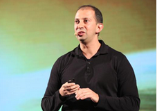

.png)
热门课程
more
马化腾：电力时代孕育了计算机，人工智能兴盛于云计算
6月21日，“云+未来”峰会在深圳召开。在数字经济高速发展，人工智能一日千里的时代，云计算为社会和经济带来的量变与质变究竟是什么？腾讯董事会主席兼首席执行官马化腾在会上表示，云已经成为产业革新的源动力、新型社会管理的主平台、人工智能的强载体。
继去年提出“云是互联网+的第一要素”、“未来是传统企业在云端用人工智能处理大数据”，马化腾今年着重提出，“云是数字经济最重要的基础设施”。过去“插上电”带来了电气化的革命，现在“接入云”将带来数字化的升级。在5月底的贵阳数博会上，马化腾就强调了云在数字经济中的作用，并且指出“用云量”将成为一个重要的经济指标，能够衡量一个行业的数字经济发展程度。
马化腾引用报告指出，企业向云端迁移的速度在加快，未来很可能超过传统数据中心。但是，云还处于初始阶段，电力时代最终出现了计算机，而人工智能有望成为云时代像计算机一样的关键产物。“云+人工智能”也许将相当于“电+计算机”的概念，企业 “接入云”能够获得AI这种信息能源。
在本次大会上，腾讯云发布了2017年战略级新品——智能云，开放腾讯在计算机视觉、智能语音识别、自然语言处理的三大核心能力。这是腾讯云首度公布其AI战略路线，智能云将在传统云计算的结构上，建立起新的服务层“AI即服务”。
此外，马化腾还分享道，不管是新兴行业还是传统产业都蕴藏着巨大的商业机会，同时也有巨大的挑战。腾讯将会继续提升、丰富，以及开放云的能力和资源，支持各行各业创新、优化、升级，共建云上生态。马化腾强调：“在新的云时代，整个社会经济操作系统和运作模式都在发生数字化的迭代。”

郭凯天：腾讯互联网公益十年的十个发现
2017年6月，腾讯高级副总裁郭凯天在2017中国互联网公益峰会上以互联网公益十年的十个发现为主题进行了分享。郭凯天首先表示，腾讯公益走过整整十年，一直奉行的是以科技连接信任，让每一个微小的善行更有力量的原则。随后他分享了腾讯十年公益的十个发现：
①互联网点燃公益。随着移动互联网时代的到来，互联网公益已经是全民参与的状态；
②98%捐款来自移动端。移动支付的崛起，使得移动端已经成为公益筹款的核心方式；
③科技让人更慷慨。互联网公益平台不断的透明和可追溯，让中国网民变得越来越慷慨和乐善好施；
④透明度决定筹款量。公益项目越透明，筹款能力越强；
⑤需要培育小而美。小而美的公益案例，都能通过努力得到更多资源和机会；
⑥70.80.90后捐赠习惯差异明显。80前每次捐款数额大，80后捐款次数多而数额小，90后还未具有经济能力，捐款能力低；
⑦“催泪弹”仍是主力项目。疾病类和救灾类等筹款期短，单位时间内的筹款能力强；
⑧经济指标与捐赠指标成正比。我国经济发达的地区，公益事业的参与程度比较高；
⑨捐赠人话语权越来越强。他们的意愿能够忠实地被倾听，也常常能给公益项目的执行提出中肯的建议，帮助公益项目得到更好的传播、产生更大的社会影响力；
⑩商业让公益更有力量。商业和公益的拥抱往往能催生出更奇妙的温暖力量。
科普微视频：走近人工智能
人工智能究竟是什么？它是研究、开发用于模拟、延伸和扩展人的智能的理论、方法、技术以及应用系统的一门新的技术科学，涉及了计算机科学、统计学、脑神经学和社会科学等多种学科。人工智能能够像人类一样去思考，能够实现识别、认知、分析和决策等功能。人工智能此次爆发的三大关键因素是计算能力增强、大数据的出现以及新算法的推出。
 2017-06-26 16:27
2017-06-26 16:27
 2017-06-26 16:27
2017-06-26 16:27
干货分享
more
一分钟测你会不会失业，鹅厂AI机器人等你来战！
2017-06-26 16:27
“我并不担心AI让计算机能够像人类一样思考。 我更担心的是人类像计算机一样思考，没有自己的价值观或同情心，不考虑事情的后果。”
腾讯大学五周年精选视频推荐
2017-06-26 16:27
腾讯大学五周年不能错过的经典，尽在五周年视频精选！
2017互联网女皇报告中文完整版！
2017-06-26 16:27
北京时间2017年6月1日，有“互联网女皇”之称的玛丽·米克尔在美国Code大会上发布了2017年的互联网趋势报告。